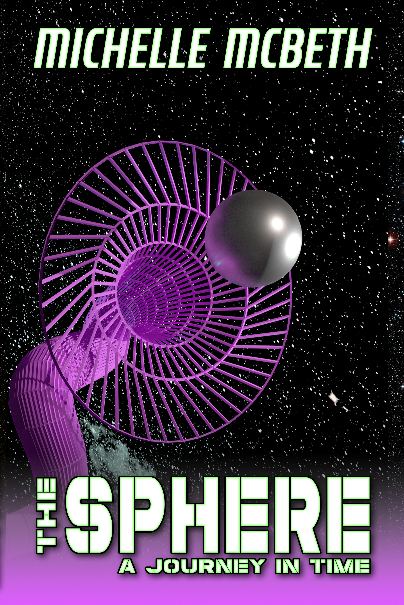

Michelle McBeth
Bio
I started writing on a bet. A month later I had a rough draft of a book, and my award of $100. Never thought that would lead to four more books, but here I am. It's a nice change from my day job as an electrical and computer engineer.
In the small amount of free time I have after taking care of my kids, I also like to dabble in the kitchen, act, and narrate. I am the President for the Northern Virginia Writers Club, and also serve on the Board of Governors for the Virginia Writers Club.
Books
I am always working on new pieces, but here's what you can find on Amazon now.
The Sphere: A Journey In Time
- 
Buy on Amazon:
Adelaide loves her job, but who wouldn’t enjoy traveling to the past to unravel the great enigmas of human history? The rules and regulations of her mysterious workplace may seem rather severe, but their need becomes apparent when a coworker returns from a mission decades older and unable to remember his life in the future. Adelaide embarks on a desperate journey through time to save her friend before he becomes trapped in the past. When her own timeline takes an unexpected turn, the fates of everyone she knows are at stake, and the secrets she uncovers put her own life at risk.
The Children of Doctor Lancing
 Buy on Amazon:
The brilliant scientist known as Doctor Lancing will stop at nothing to save the love of his life, bringing together some of the greatest young minds in the world to work at his top secret laboratory. His plans take a turn as circumstances beyond his control start to pull him in different directions. When one particularly brilliant but unstable child threatens the stability of the lab and of Doctor Lancing himself, he has to find a way to regain control over his life and his children. The line between right and wrong becomes blurred as he struggles to keep things together, and he finds that even the best intentions can have cruel consequences.
Buy on Amazon:
The brilliant scientist known as Doctor Lancing will stop at nothing to save the love of his life, bringing together some of the greatest young minds in the world to work at his top secret laboratory. His plans take a turn as circumstances beyond his control start to pull him in different directions. When one particularly brilliant but unstable child threatens the stability of the lab and of Doctor Lancing himself, he has to find a way to regain control over his life and his children. The line between right and wrong becomes blurred as he struggles to keep things together, and he finds that even the best intentions can have cruel consequences.
In this exciting second installment of The Sphere Saga, learn about the origins of the laboratory where Adelaide works, and the events leading up to her final confrontation with Doctor Lancing.
The Lunar Conspiracy
 Buy on Amazon: When Adelaide travels back in time to obtain possible evidence of extraterrestrial life, an encounter with an old acquaintance causes her to lose her memory and she is thrown even farther back into history. The dangerous challenges she encounters leave her wondering if she even wants to remember who she was. Can she recover her lost memories and restore the fractured timeline before something even more sinister is set in motion?
Buy on Amazon: When Adelaide travels back in time to obtain possible evidence of extraterrestrial life, an encounter with an old acquaintance causes her to lose her memory and she is thrown even farther back into history. The dangerous challenges she encounters leave her wondering if she even wants to remember who she was. Can she recover her lost memories and restore the fractured timeline before something even more sinister is set in motion?
The third book of the Sphere Saga returns to Adelaide’s point of view, picking up where the first two books ended and proving that sometimes the rules are worth following.
Shorts
A collection of fictional short stories and personal essays.